�T.カタログ
2.単品カタログ
�@イヤスピーカー（ヘッドフォン）・システム商品
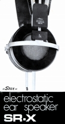
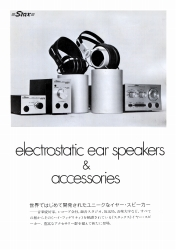
1974年10月版イヤスピーカー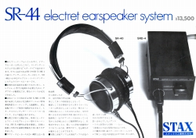
SR-44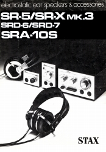
1976年6月版イヤスピーカー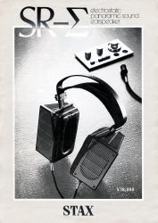
SR-Σ（シグマ）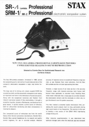
SR-Λ（ラムダ）Professional/SRM-1/MK-2PRO 英文カタログ (�泣Xタックス様から提供）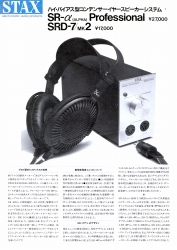
SR-α（アルファ）Professional/SRD-7mk2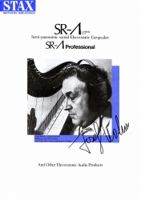
SR-Λ/Λ（ラムダ）ProfessionalSR-Σ（シグマ）Professional/SR-Λ（ラムダ）Signature/SRM-T1
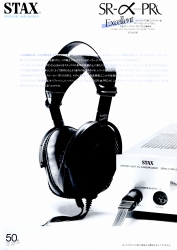
SR-α（アルファ）PRO Excellent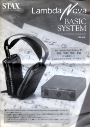
Lambda Nova BASIC SYSTEM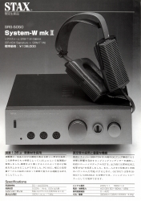
SRS-5050(System-W mk�U）カタログ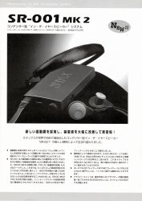
SR-001mk2/SR-003/SRS-005カタログ�Aドライバーユニット・アダプター・（イヤスピーカー用）アンプ
・ドライバーユニット
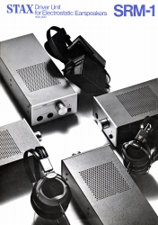
SRM-1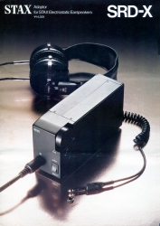
SRD-X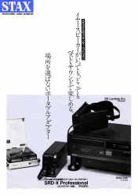
SRD-X Professional（注 昇圧過程でトランスを使用するため「SRD」型番がついていますが、用途がラインレベル接続なので、ドライバーユニットに分類しております。）
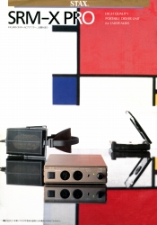
SRM-X PRO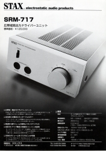
SRM-717・（イヤスピーカー用）アンプ
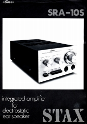
SRA-10S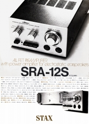
SRA-12S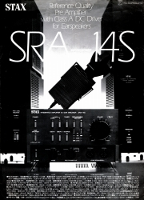
SRA-14S�Bその他のオーディオ製品
・ラウドスピーカー
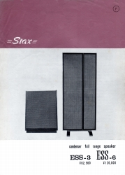
ESS-3/ESS-6 （「蒼乃雑記」蒼乃さんの提供）
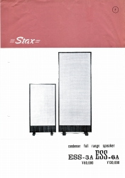
ESS-3A/ESS-6A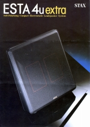
ESTA 4uextra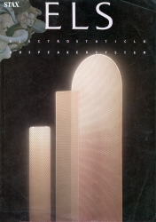
ELS-8X・BB/8X/F83X/F81X・プリアンプ
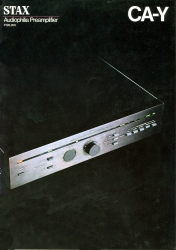
CA-Y・パワーアンプ
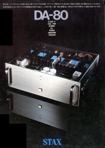
DA-80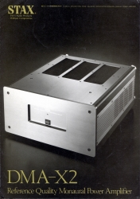
DMA-X2・CDプレイヤー
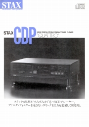
QUATTRO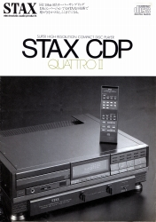
QUATTRO�U・DAコンバーター
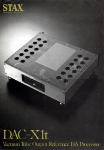
DAC-X1t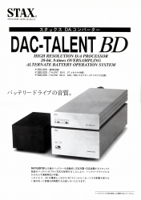
DAC-TALENT BD・アナログディスク関連
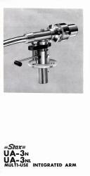
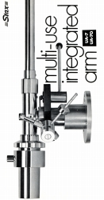
UA-7/UA-70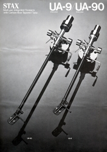
UA-9/90
総合カタログのページ
トップページへ